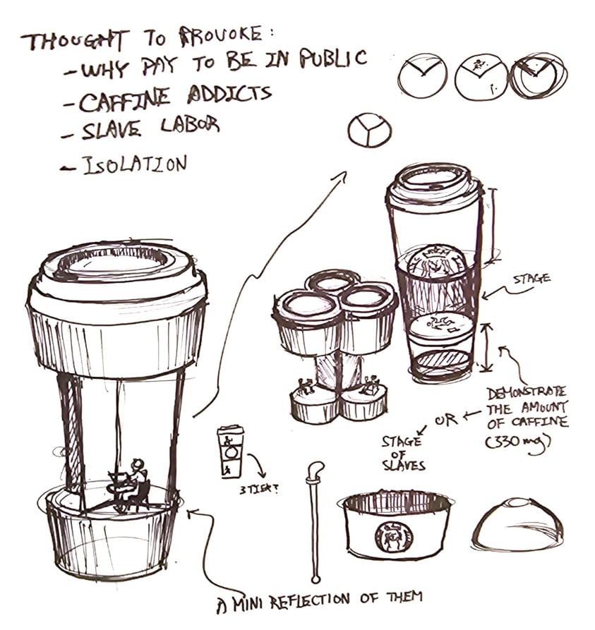
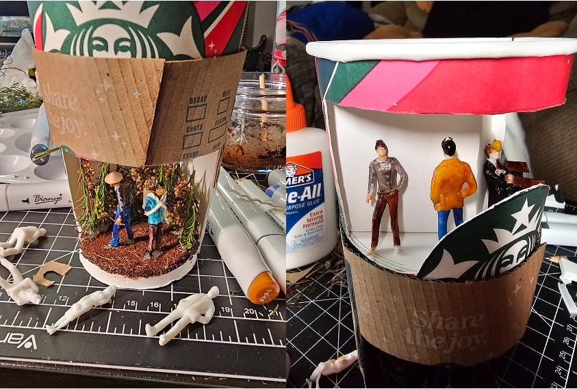
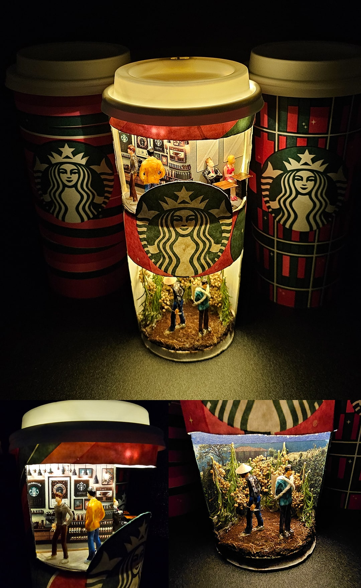

This ethnographic research project explores the disconnect between the everyday experience of coffee drinkers and the hidden labor that fuels their consumption. Conducted through fieldwork and user observation at local coffee shops in Davis, CA, the project culminated in a conceptual diorama that visualizes this layered reality. While not a digital interface, this project requires core UX research skills such as observation, persona development, systems thinking, and experiential storytelling.
Over multiple sessions, I captured behaviors through observational field notes. The notes included physical setups, interpersonal dynamics, and reactions to the environment. These formed the basis of the insights that guided the concept.
To explore the tactile and emotional connection people have with coffee rituals, I began with a concept sketch and followed with hands-on prototyping. These artifacts grounded the research in tangible experience, helping frame the sensory and cultural dimensions of coffee preparation.
 The conceptual diorama shows a split perspective—above the surface, a solitary coffee drinker lost in their own world; below, a worker harvesting beans, unseen and ignored. This model communicates the project's central insight: the emotional and physical disconnection between consumption and production.
UX design is ultimately about people. The interface is not always digital — sometimes it's social, cultural, or invisible. This project deepened my empathy for users and makers across systems and helped me consider storytelling and research in new, more expansive ways.